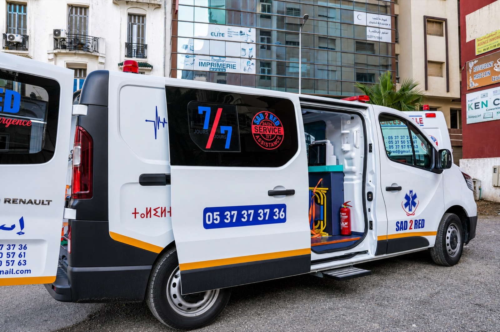
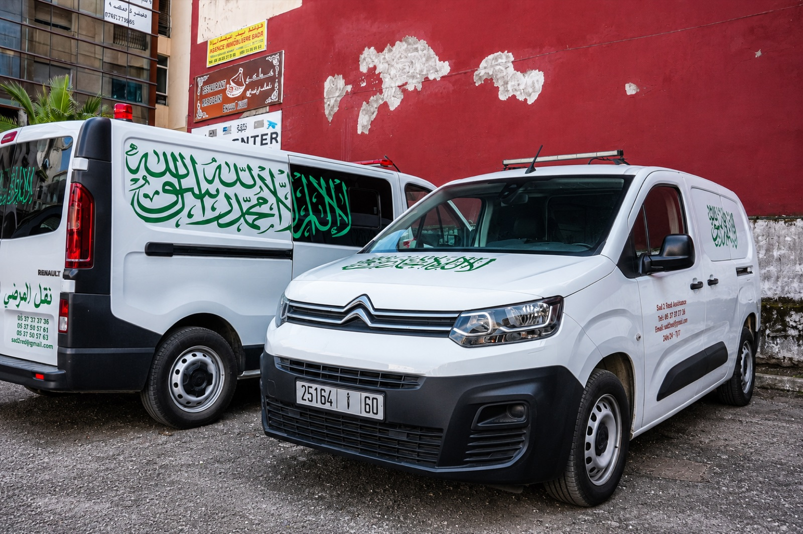
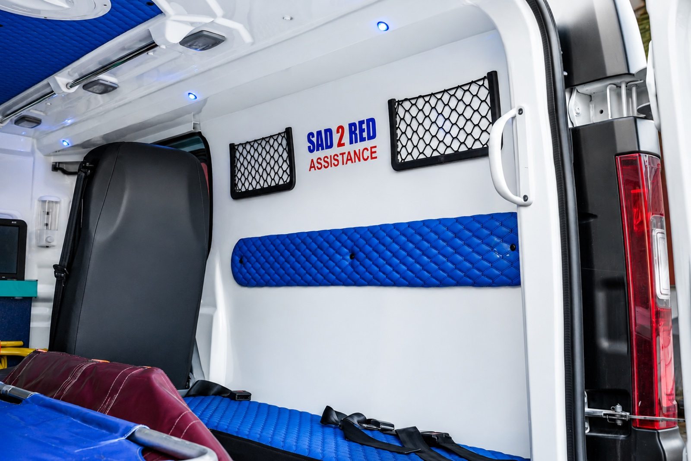

Demande de transport
Présentez votre situation et votre besoin de déplacement.
Intervention possible sous 30 minutes, selon disponibilité.Avant de nous contacter
Nous recueillons les informations utiles afin de vous orienter selon la situation et les possibilités disponibles.
Nos services
Les prestations proposées sont à confirmer avec SAD2RED avant toute demande.
Présentez votre situation et votre besoin de déplacement.
Intervention possible sous 30 minutes, selon disponibilité.Hôpital à hôpital, domicile à hôpital, transport pour abonnement, dialyse ou chimiothérapie.
Tarif confirmé au cas par cas.Ambulance médicalisée avec ou sans équipe médicale pour vos transports et vos événements.
Disponible 24 h/24 et 7 j/7, selon confirmation.Types de transport
Décrivez votre situation par téléphone afin de confirmer le véhicule, l’accompagnement et la disponibilité nécessaires.
Retour à domicile après une hospitalisation ou une consultation.
Transport organisé depuis votre domicile vers un établissement de santé.
Déplacement entre deux établissements selon les besoins du patient.
Transports programmés pour les soins et rendez-vous médicaux réguliers.
Transferts médicaux depuis ou vers Kénitra, selon étude du trajet.
Accompagnement adapté aux personnes ayant besoin d’une assistance particulière.
Zone d’intervention
Nous intervenons dans les principaux quartiers de Kénitra et leurs environs, selon la disponibilité au moment de l’appel.
Questions fréquentes
Appelez Medomicile au +212 6 63 05 82 22 ou envoyez un message WhatsApp. Décrivez la situation, le lieu de départ, la destination et l’horaire souhaité afin de confirmer la prise en charge.
Une intervention peut être possible sous 30 minutes, selon la disponibilité et la confirmation de la demande. Le délai exact est communiqué lors de l’appel.
Une ambulance médicalisée peut être proposée, avec ou sans équipe médicale, selon l’état du patient et les besoins du transport. Cette possibilité doit être confirmée avant la prise en charge.
Oui, les transferts médicaux longue distance depuis ou vers Kénitra peuvent être étudiés au cas par cas, selon le trajet, le véhicule disponible et les besoins du patient.
Oui, des transports programmés pour la dialyse et la chimiothérapie peuvent être organisés, sous réserve de confirmation de la disponibilité et des conditions nécessaires.
SAD2RED — nos ambulances
Les détails opérationnels et les équipements sont à confirmer avec SAD2RED.



Conventions & partenaires
Réassurance
Contact rapide
Appelez Medomicile ou envoyez un message WhatsApp pour expliquer votre besoin.